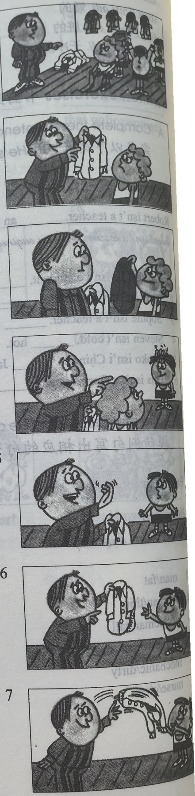

Lesson content · 课文
Lesson 11: Is this your shirt? · 这是你的衬衫吗？
Listen then answer this question. 听录音，然后回答问题。
Whose shirt is white?
谁的衬衣是白色的？
TEACHER: Whose shirt is that?
TEACHER: Is this your shirt, Dave?
DAVE: No, sir. It’s not my shirt.
DAVE: This is my shirt. My shirt’s blue.
TEACHER: Is this shirt Tim’s?
DAVE: Perhaps it is, sir. Tim’s shirt’s white.
TEACHER: Tim!
TIM: Yes, sir?
TEACHER: Is this your shirt?
TIM: Yes, sir.
TEACHER: Here you are. Catch!
TIM: Thank you, sir.

New words and expressions · 生词和短语
| Word · 单词 | Pronunciation · 音标 | Meaning · 词义 |
|---|---|---|
| whose | /huːz/ | pron. 谁的 |
| blue | /bluː/ | adj. 蓝色的 |
| perhaps | /pəˈhæps/ | adv. 大概 |
| white | /waɪt/ | adj. 白色的 |
| catch | /kætʃ/ | v. 抓住 |
Notes on the text · 课文注释
- Whose shirt is that? 疑问代词 whose 在本句中作定语，修饰 shirt。
- Is this shirt Tim’s? Tim’s 是 Tim 的所有格形式，为避免重复，Tim’s 后面可以省去 shirt。例：It isn’t my pen, it’s Frank’s. 这不是我的钢笔，是弗兰克的。
- Here you are. 或 Here it is. 是给对方东西时的用语，句中的 are 和 is 应重读。
Chinese translation · 参考译文
老师：那是谁的衬衫？
老师：戴夫，这是你的衬衫吗？
戴夫：不，先生。这不是我的衬衫。
戴夫：这是我的衬衫。我的衬衫是蓝色的。
老师：这件衬衫是蒂姆的吗？
戴夫：也许是，先生。蒂姆的衬衫是白色的。
老师：蒂姆！
蒂姆：什么事，先生？
老师：这是你的衬衫吗？
蒂姆：是的，先生。
老师：给你。接着！
蒂姆：谢谢您，先生。
Practice · 课文练习
Understand the lesson · 课文理解
Comprehension · 理解题
Answer the question about the lesson text. 根据课文回答问题。
-
comprehension: Comprehension · 理解题 — Whose shirt is white?
Practice worksheet · 配套练习
A. Dialogue
Read this dialogue. Fill in the missing words. 填空。
-
worksheet: A. Dialogue — Teacher: ____ is this blue pen? Is it ____ pen, Tim?
Tim: No, it isn’t ____ pen, sir. My pen’s white.
Teacher: ____ it ____ pen, Stella?
Stella: No, ____ isn’t ____ pen, sir.
Teacher: ____ is it? Is it ____ sister’s, Tim?
Tim: No, it isn’t ____ pen, sir.
Teacher: ____ it ____ pen, Dave?
Dave: Yes, sir.
Teacher: ____ you are. Catch!
Dave: ____ you, sir.
B. Vocabulary
Look at this. Then fill in the words in the sentences below. 根据以下家谱填空。
| Parents · 父母 | Children · 子女 |
|---|---|
| Mr. Brown and Mrs. Brown | Tim Brown and Sophie Brown |
Example · 例句
Mr. Brown is a man.
-
worksheet: B. Vocabulary — Mrs. Brown is a ____.
-
worksheet: B. Vocabulary — Mr. Brown is Tim and Sophie’s ____.
-
worksheet: B. Vocabulary — Mrs. Brown is Tim and Sophie’s ____.
-
worksheet: B. Vocabulary — Tim is Mr. and Mrs. Brown’s ____.
-
worksheet: B. Vocabulary — Sophie is Mr. and Mrs. Brown’s ____.
-
worksheet: B. Vocabulary — Tim is Sophie’s ____.
-
worksheet: B. Vocabulary — Sophie is Tim’s ____.
C. Numbers
Write these numbers in figures. 用阿拉伯数字表示以下数词。
-
worksheet: C. Numbers — thirty
-
worksheet: C. Numbers — twenty-three
-
worksheet: C. Numbers — twenty-one
-
worksheet: C. Numbers — twenty-five
-
worksheet: C. Numbers — twenty-seven
-
worksheet: C. Numbers — twenty-eight
Grammar practice · 语法练习
I. Answer using the cue
Examples: Is this your tie? (yes) -> Yes, it is. It's my tie. Is this your sister? (no/Tim's) -> No, she isn't. She isn't my sister. She's Tim's sister.
- Is this his umbrella? (no/her)
- Is this your house? (no/my father's)
- Is this her blouse? (yes)
- Is this Tony's car? (no/her)
- Is this my pen? (no/my)
- Is this Helen's handbag? (yes)
- Is this Sophie's dress? (no/Emma's)
- Is this Robert's coat? (no/Robert's brother's)
- Is this your father? (no/Helen's)
- Is this his suit? (yes)
II. Rewrite following the example
Example: This is Emma's skirt. -> This skirt is Emma's.
- This is my father's car.
- This is Tim's tie.
- This is Xiao Fang's blouse.
- This is my mother's watch.
- This is Helen's ticket.
- This is Dave's sister's room.
- This is that policeman's coat.
- This is my teacher's office.
- This is Steven's suit.
III. Underline possessive nouns with apostrophes
- Mr. Scott is Jean's father.
- Is Mrs. Scott Jean's mother?
- Dave's an American student.
- My sister's blouse is white.
- Helen's handbag's blue.
- It's my son's.
- This is the old man's hat.
- Emma's skirt's blue.
- Her name's very nice.
- That umbrella's my sister's.
- That shirt's Steven's.
- It's the boy's bike.
- Is this new tie Robert's?
- Helen's mother's a nurse.
Your notes and answers
Use this space for longer responses or exercises that do not have an individual answer box.